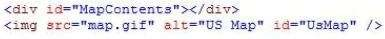
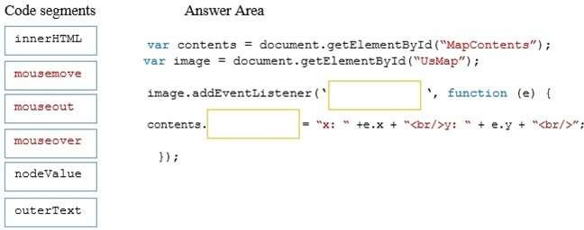
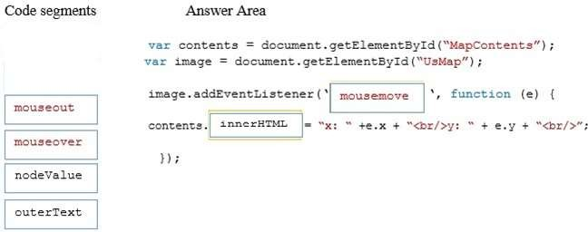

|
DRAG DROP
You develop an HTML5 webpage. You have the following HTML markup:

You need to update the content of the DIV element when the mouse hovers over an image and when the
mouse coordinates
change.
How should you complete the relevant code? (To answer, drag the appropriate code segment to
the correct location or locations in the answer area. Use only code segments that
apply.)
Select and Place:

Correct Answer:

Section: Volume D Explanation
Explanation/Reference:
Explanation:
* addEventLister mousemove
Use the element.addEventListener() method to attach an event handler to a specified
element.
onmousemove : Fires when the mouse pointer is moving while it is over an element
* The clientX property returns the horizontal coordinate (according to the client area) of the mouse
pointer when a mouse event was
triggered.
Example:
Output the coordinates of the mouse pointer when an mouse event has
occurred:
var x = event.clientX; // Get the horizontal coordinate
var y = event.clientY; // Get the vertical coordinate
var coor = "X coords: " + x + ", Y coords: " + y;
The result of coor could be:
X coords: 142, Y coords: 99
References:
https://www.w3schools.com/jsref/met_document_addeventlistener.asp
https://www.w3schools.com/jsref/event_onmousemove.asp
https://www.w3schools.com/jsref/event_clientx.asp
Explicación
addEventListener() Registra un evento a un objeto en específico.
El ObJeto especifico puede ser un simple elemento en un archivo, el mismo documento , una ventana o un
XMLHttpRequest.
Para registrar más de un eventListener, puedes llamar addEventListener() para el mismo elemento
pero con diferentes tipos de eventos o parámetros de captura.
La sintaxis es la siguiente:
Target.addEventListener(tipo, listener[, useCapture]);
target.addEventListener(tipo, listener[, useCapture, wantsUntrusted ]);
tipo: Una cadena representando el tipo de evento a escuchar.
listener: El objeto que recibe una notificación cuando un evento de el tipo especificado ocurre. Debe
ser un objeto implementando la interfaz EventListener ó solo una function en JavaScript.
Respuesta:
Por lo descrito anteriormente la respuesta en el primer campo es "mouseover" y en el segundo campo es "InnerHtml".
Fuentes:
Las mencionadas anteriormente entre ellas:
https://www.w3schools.com/jsref/met_element_addeventlistener.asp
|